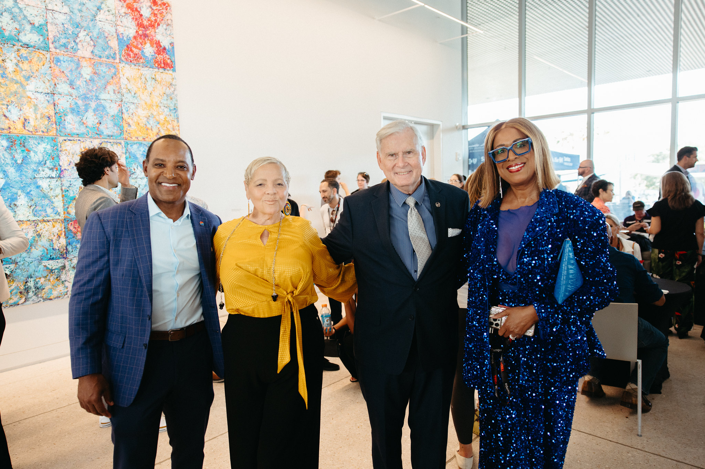

A Civic Event, Not Just a Stage
Tampa came ready
Leaders and original thinkers from healthcare, higher education, aviation, technology, public service, entertainment, and spiritual life — an idea about vulnerability beside an idea about democracy, AI in conversation with mentorship, research, and faith. The sold-out audience was part of that exchange.